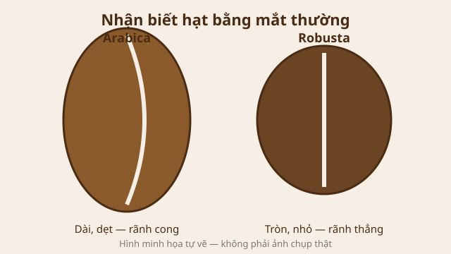

Robusta hay Arabica: chọn theo khẩu vị, không chọn theo tên gọi
Tác giả: Ruler
Khi cầm hai gói cà phê lên, nhiều người chỉ nhìn tên Robusta hay Arabica rồi quyết định theo thói quen: người thích đậm thì lấy Robusta, người thích thơm thì lấy Arabica. Cách chọn đó đúng một phần, nhưng chưa đủ. Hai cái tên này không phải là hai thương hiệu, mà là hai loài cây khác nhau, trồng ở độ cao khác nhau, cho hạt có thành phần khác nhau, và vì vậy cho ra ly cà phê khác nhau ngay cả khi bạn pha cùng một cách.
Bài này giải thích sự khác nhau đó bằng những điểm người uống có thể cảm nhận được, rồi đưa ra một cách nếm thử đơn giản tại nhà để bạn tự quyết định. Bạn không cần nhớ hết các con số. Bạn chỉ cần nhớ cảm giác của mình khi uống từng loại, và biết vì sao cảm giác đó xuất hiện.
Hai loài cây, hai nơi sống khác nhau
Arabica có tên khoa học là Coffea arabica. Cây này có nguồn gốc từ vùng cao nguyên ở phía tây nam Ethiopia, và vẫn giữ thói quen của quê nhà: thích khí hậu mát, độ cao lớn, đất thoát nước tốt, ít biến động nhiệt độ. Các nguồn so sánh hai loài thường ghi Arabica trồng ở độ cao khoảng 600–2.000 m. Cây Arabica nhạy cảm hơn với thời tiết và sâu bệnh, cần chăm sóc kỹ hơn, và vì vậy chi phí trồng thường cao hơn.
Robusta có tên khoa học là Coffea canephora, tên thường gọi Robusta đã nói lên tính cách của cây: khỏe và chịu đựng tốt. Cây này có nguồn gốc từ vùng đất thấp ở Trung và Tây Phi, chịu được nóng ẩm, trồng được ở độ cao từ gần mực nước biển tới khoảng 800 m, và kháng sâu bệnh tốt hơn Arabica. Nhờ vậy, Robusta cho năng suất ổn định hơn trong điều kiện khắc nghiệt, và giá thành thường thấp hơn Arabica.
Việt Nam là một ví dụ rõ nhất cho sự hợp nhau giữa Robusta và khí hậu vùng thấp. Theo Đại học RMIT Việt Nam, Việt Nam hiện là nước sản xuất cà phê Robusta lớn nhất thế giới, với khoảng 97% sản lượng là cà phê Robusta. Cũng theo nguồn này, Việt Nam là nước xuất khẩu cà phê lớn thứ hai thế giới. Con số 97% là tỉ lệ sản lượng trong nước, không phải tỉ lệ Robusta của thế giới, nên bạn đừng đọc nhầm thành Việt Nam chiếm 97% Robusta toàn cầu. Điều quan trọng với người uống là: khi bạn uống cà phê phin ở Việt Nam, rất có thể bạn đang uống Robusta trồng trong nước, và vị đậm đắng quen thuộc đó gắn liền với chính loài cây này.
Hạt khác nhau nhìn bằng mắt thường cũng thấy
Nếu bạn đặt hai hạt rang cạnh nhau, bạn có thể thấy sự khác nhau mà không cần dụng cụ đo. Hạt Arabica thường dài hơn, hơi dẹt, có rãnh ở giữa cong nhẹ như hình chữ S. Hạt Robusta thường tròn hơn, nhỏ hơn, mặt hạt lồi hơn, rãnh giữa thẳng hơn. Đây chỉ là dấu hiệu nhận biết tương đối. Sau khi rang đậm, hạt nào cũng sẫm màu và khó phân biệt hơn, nên bạn đừng dùng hình dáng hạt làm cách duy nhất để kiểm tra gói cà phê mình mua. Cách chắc chắn hơn vẫn là đọc thông tin trên bao bì và hỏi người bán về loài, vùng trồng và ngày rang.

Hình minh họa tự vẽ — không phải ảnh chụp thật.
Sự khác nhau về hình dáng phản ánh sự khác nhau về thành phần bên trong. Arabica có nhiều đường và chất béo hơn Robusta. Khi rang, đường chuyển thành vị ngọt và hương thơm phức tạp, chất béo giúp ly có cảm giác mịn hơn. Robusta có ít đường và ít chất béo hơn, nhưng có nhiều caffeine và nhiều axit chlorogenic hơn. Hai chất này góp phần tạo vị đắng và cảm giác chát. Vì vậy, cùng một độ rang, ly Arabica thường ngọt và thơm hơn, còn ly Robusta thường đậm, đắng và dày hơn.
Caffeine: con số cần đọc theo khoảng, không đọc theo một số duy nhất
Caffeine là điểm khác nhau được nhắc nhiều nhất giữa hai loài, và cũng là điểm dễ bị ghi sai nhất nếu bạn chỉ lấy một nguồn. Các nguồn so sánh thường ghi Arabica chứa khoảng 1,2–1,5% caffeine theo trọng lượng khô, còn Robusta chứa khoảng 2,2–2,7%. Nói cách khác, cùng một lượng bột, ly Robusta có gần gấp đôi caffeine so với ly Arabica. Các nguồn khác có thể cho khoảng khác nhau, tùy giống cây, vùng trồng và cách đo, nên bài này dùng khoảng của Báo Công Thương và CoffeeWiki, và không ghi thêm khoảng nào khác khi chưa mở được nguồn đó. Điều người uống cần nhớ không phải là con số phần trăm, mà là hệ quả của nó: caffeine có vị đắng, nên lượng caffeine cao hơn là một phần lý do Robusta đắng đậm hơn. Bài này không đưa ra lời khuyên về việc ai nên uống bao nhiêu caffeine mỗi ngày, vì đó là chuyện sức khỏe riêng của từng người.
Ngoài caffeine, Robusta còn có hàm lượng axit chlorogenic cao hơn Arabica, theo CoffeeWiki. Chất này góp phần tạo vị gỗ, vị đất và cảm giác chát trong ly Robusta. Khi rang đậm, một phần axit này phân hủy và vị đắng thay đổi, nhưng cảm giác dày và mạnh của Robusta vẫn còn. Arabica, nhờ nhiều đường hơn, khi rang vừa thường cho vị chua sáng, hương hoa quả và hương caramel rõ hơn.
Bảng so sánh để tra nhanh
Bảng dưới đây do chúng tôi tự tổng hợp từ các nguồn đã dẫn. Các con số là khoảng tham khảo, không phải giá trị cố định cho mọi gói cà phê. Một gói Arabica rang đậm có thể đắng hơn một gói Robusta rang nhạt, nên bảng này chỉ đúng khi bạn so sánh hai loại ở cùng độ rang và cùng cách pha.
| Đặc điểm | Arabica (Coffea arabica) | Robusta (Coffea canephora) |
|---|---|---|
| Độ cao trồng thường gặp | Khoảng 600–2.000 m | Từ gần mực nước biển tới khoảng 800 m |
| Caffeine theo trọng lượng khô | Khoảng 1,2–1,5% | Khoảng 2,2–2,7% |
| Vị nổi bật | Ngọt, thơm, chua sáng, nhiều lớp hương | Đậm, đắng, dày, ít chua |
| Hương thường gặp | Hoa, trái cây, caramel, chocolate | Đất, gỗ, ngũ cốc, đôi khi có vị cao su nhẹ ở loại rang kém |
| Body (độ dày của ly) | Nhẹ tới vừa | Dày, nặng |
| Độ chua | Cao hơn, rõ hơn | Thấp hơn |
| Sức chống chịu của cây | Nhạy cảm hơn, cần chăm sóc kỹ | Khỏe hơn, kháng sâu bệnh tốt hơn |
| Giá tương đối | Thường cao hơn | Thường thấp hơn |
| Tỉ trọng sản lượng thế giới | Khoảng 60–70% | Khoảng 30–40% |
| Hình dáng hạt | Dài, dẹt, rãnh cong | Tròn, nhỏ, rãnh thẳng |
Tỉ trọng sản lượng thế giới trong bảng cũng là khoảng. Có nguồn ghi Arabica khoảng 60% và Robusta khoảng 40%, có nguồn ghi Arabica 60–70% và Robusta 30–40%. Bạn nên đọc hai con số này như một khoảng chung, không phải số liệu của một niên vụ cụ thể.
Vì sao Robusta hợp với phin, còn Arabica hợp với cách pha khác
Phin là cách pha ngâm và nhỏ giọt chậm, dùng nước nóng đi qua bột trong vài phút. Cách pha này làm nổi bật vị đậm, đắng và body dày của Robusta, và làm dịu bớt vị chua của nó. Khi pha phin với Robusta, bạn được ly đen sánh, đắng rõ, hợp với sữa đặc và đá. Đó là lý do cà phê sữa đá Việt Nam thường dùng Robusta làm nền. Bài về pha phin trong website này dùng 25g bột và 80ml nước làm điểm bắt đầu; nếu bạn pha bằng Robusta, ly sẽ đậm theo đúng kiểu đó.
Arabica lại hợp với những cách pha làm nổi bật hương thơm và vị chua sáng, ví dụ pha pour over bằng phễu V60, hoặc pha bằng bình French press với thời gian ngâm ngắn hơn. Khi pha Arabica bằng phin, ly vẫn uống được, nhưng bạn có thể thấy vị chua và hương hoa quả bị lấn át bởi vị đắng của cách pha chậm. Ngược lại, khi pha Robusta bằng V60, ly có thể trong hơn và nhẹ hơn, nhưng bạn sẽ mất đi cảm giác dày đặc trưng của Robusta. Không có cách pha nào sai hoàn toàn. Chỉ có cách pha nào làm nổi bật được điểm mạnh của loại hạt bạn đang có.
Một điểm nữa cần nói rõ: Robusta ngon không phải là Robusta đắng gắt. Robusta rang kỹ, xay đúng cỡ và pha đúng cách có thể cho vị chocolate, hạt dẻ và vị ngọt hậu. Robusta kém chất lượng, rang cháy hoặc để lâu mới là loại cho vị gỗ, vị cao su và vị đắng khó chịu. Cũng vậy, Arabica không phải lúc nào cũng thơm và ngọt. Arabica rang quá đậm, xay quá mịn hoặc pha bằng nước quá nóng cũng có thể đắng và mất hương. Vì vậy, đừng đánh giá một loài chỉ qua một lần uống dở.
Phối trộn: cách người Việt thường làm để lấy cả hai vị
Nhiều người pha phin không dùng một loài duy nhất, mà phối trộn Robusta và Arabica. Tỉ lệ phối trộn phổ biến mà Message Coffee nhắc tới là 8 phần Robusta và 2 phần Arabica, viết gọn là 8:2. Cũng có người dùng 7:3 hoặc 5:5, tùy theo khẩu vị. Tỉ lệ 8:2 cho ly vẫn đậm và đắng theo kiểu phin, nhưng có thêm chút hương thơm của Arabica. Tỉ lệ 5:5 cho ly cân bằng hơn, ít đắng gắt hơn, nhưng cũng ít đậm hơn.
Bạn nên coi các tỉ lệ này là điểm bắt đầu để thử, không phải công thức bắt buộc. Cách thử đơn giản là mua hai gói nhỏ, một gói Robusta và một gói Arabica, rồi pha ba ly với tỉ lệ 8:2, 7:3 và 5:5, dùng cùng một chiếc phin, cùng lượng bột và nước. Nếm ba ly cạnh nhau, ghi lại ly nào bạn thích nhất. Nếu bạn thích ly 8:2, bạn đã có công thức của mình. Nếu bạn thích ly 5:5, bạn cũng đã có công thức của mình. Không cần ai xác nhận giúp bạn.
Cách nếm thử tại nhà trong một buổi sáng
Phần này là quy trình tự làm của bài, giúp bạn so sánh hai loài mà không cần dụng cụ đắt tiền. Bạn cần hai gói cà phê nhỏ, một chiếc phin, một chiếc cân, nước nóng và ba chiếc ly giống nhau.
Bước đầu tiên là pha hai ly riêng biệt: một ly Robusta và một ly Arabica, mỗi ly dùng cùng 25g bột và 80ml nước, pha theo các bước trong Bài 01 của website này. Bạn không cần pha cầu kỳ. Điều quan trọng là hai ly dùng cùng lượng bột, cùng lượng nước và cùng thời gian chờ, để sự khác nhau bạn nếm được đến từ hạt, không phải từ cách pha.
Bước thứ hai là nếm theo thứ tự: ngửi trước, nhấp một ngụm nhỏ, để cà phê chạm khắp miệng rồi mới nuốt. Ghi lại ba điều cho mỗi ly: vị đầu tiên bạn nhận ra là gì, vị đắng hay vị chua rõ hơn, và sau khi nuốt, miệng bạn còn lại vị gì. Bạn có thể dùng những từ đơn giản của mình, ví dụ đắng đậm, thơm nhẹ, chua sáng, dày, mỏng, khô miệng. Không cần dùng từ chuyên ngành.
Bước thứ ba là pha ly thứ ba với tỉ lệ phối trộn mà bạn tò mò nhất, ví dụ 7:3. Nếm ly này sau hai ly đầu, và ghi lại xem nó gần với ly nào hơn. Sau một buổi sáng, bạn sẽ có một bảng ghi nhỏ với ba dòng, và bạn sẽ biết mình thích Robusta thuần, Arabica thuần hay một tỉ lệ phối trộn nào đó. Bảng ghi này có giá trị hơn nhiều so với việc đọc mười bài so sánh trên mạng, vì nó viết bằng chính miệng của bạn.
Mua hạt như thế nào để lần nếm sau giống lần nếm trước
Khi mua cà phê, bạn nên đọc ba thông tin trên bao bì: loài hạt, ngày rang và độ rang. Loài hạt cho bạn biết ly sẽ thiên về đậm hay thơm. Ngày rang cho bạn biết hạt còn mới hay không. Độ rang cho bạn biết hạt rang nhạt, vừa hay đậm, và độ rang này ảnh hưởng tới vị nhiều không kém loài hạt. Một gói chỉ ghi chung chung là cà phê nguyên chất mà không ghi loài, ngày rang và độ rang thì khó giúp bạn lặp lại được ly mình thích.
Bạn cũng nên mua lượng nhỏ trong lần đầu thử một loại mới, ví dụ gói 250g thay vì gói 1kg. Hạt nguyên giữ hương lâu hơn bột xay sẵn, nên nếu bạn có cối xay, hãy mua hạt nguyên và xay vừa đủ cho mỗi lần pha. Cách bảo quản hạt và bột được viết đầy đủ ở Bài 05 của website này, nên bài này không nhắc lại chi tiết đó.
Kết luận
Robusta và Arabica không có loại nào ngon hơn loại nào một cách tuyệt đối. Robusta cho ly đậm, đắng, dày, hợp với phin và cà phê sữa đá. Arabica cho ly ngọt, thơm, chua sáng, hợp với cách pha làm nổi bật hương. Việt Nam trồng chủ yếu Robusta, nên vị phin đậm đắng đã trở thành vị quen thuộc của nhiều người. Nhưng quen thuộc không có nghĩa là duy nhất đúng. Hãy pha thử hai loại cạnh nhau, ghi lại cảm nhận của mình, rồi chọn theo khẩu vị của bạn. Đó mới là cách chọn phù hợp nhất với bạn.
Nguồn tham khảo
- Báo Công Thương, "Phân biệt Arabica và cà phê Robusta khác nhau như thế nào?" — Arabica chứa khoảng 1,2–1,5% caffeine, Robusta chứa khoảng 2,2–2,7%; Arabica trồng ở vùng núi cao trên 1.000 m, hạt dài và rãnh cong; Robusta trồng ở vùng thấp, hạt tròn và rãnh thẳng, chịu điều kiện khắc nghiệt tốt hơn (truy cập 23/11/2026): https://congthuong.vn/phan-biet-arabica-va-ca-phe-robusta-khac-nhau-nhu-the-nao-340790.html
- CoffeeWiki, "Arabica vs. Robusta: What's the Difference?" — Robusta chứa khoảng 2,2–2,7% caffeine so với Arabica khoảng 1,2–1,5%; Arabica trồng ở độ cao 600–2.000 m, Robusta ở 0–800 m; Arabica chiếm khoảng 60–70% sản lượng thế giới, Robusta khoảng 30–40% (truy cập 23/11/2026): https://www.coffee.wiki/articles/bean-types/arabica-vs-robusta/
- Đại học RMIT Việt Nam, "Gió lớn từ thị trường toàn cầu lay động ngành cà phê Việt" — Việt Nam là nước xuất khẩu cà phê lớn thứ hai và nhà sản xuất cà phê Robusta hàng đầu thế giới, với khoảng 97% sản lượng là cà phê Robusta (truy cập 23/11/2026): https://www.rmit.edu.vn/vi/tin-tuc/tat-ca-tin-tuc/2024/aug/gio-lon-tu-thi-truong-toan-cau-lay-dong-nganh-ca-phe-viet.html
- Message Coffee, "Cách pha cà phê phin, video hướng dẫn và bí kíp pha cà phê phin ngon" — tỉ lệ phối trộn hạt phổ biến là 8:2 (80% Robusta và 20% Arabica), hoặc 7:3, 5:5 tùy khẩu vị; trang này là blog của một thương hiệu bán cà phê nên chỉ dùng làm nguồn phụ cho công thức phối trộn, không dùng làm nguồn chính cho số liệu (truy cập 23/11/2026): https://messagecoffee.com/blogs/cong-thuc-pha-che/cach-pha-ca-phe-phin-video-huong-dan-va-bi-kip-pha-ca-phe-phin-ngon